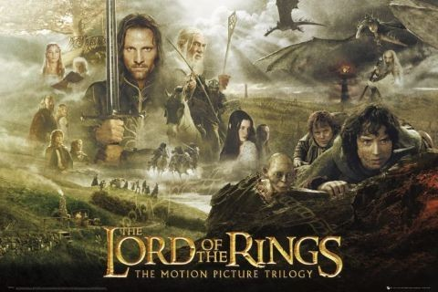
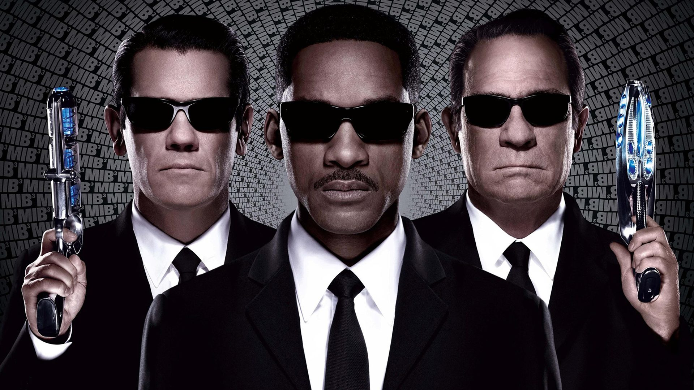
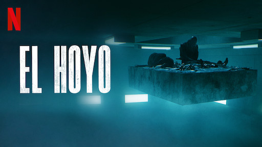
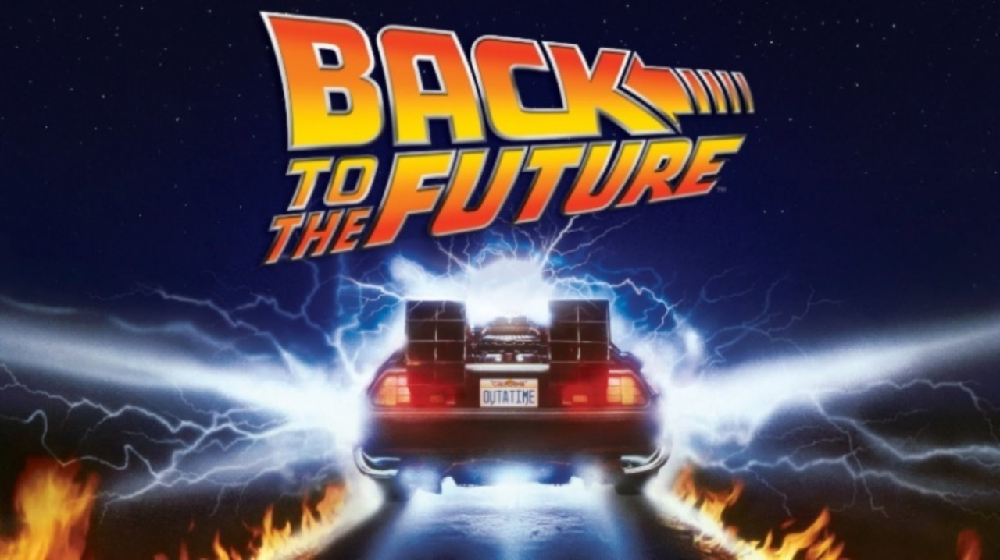

Gotham City krijgt te maken met een nieuw gevaar: Bane (Tom Hardy), een wrede schurk die in het verleden ernstig gewond is geraakt en een verdovend gas nodig heeft om te overleven. Zonder zijn masker, dat in zijn kaak verwerkt zit, is de pijn voor hem niet vol te houden. Batman (Christian Bale), die acht jaar na het debacle met The Joker, en de tragische dood van Harvey Dent er niet al te best aan toe is, zal in Bane zijn grootste uitdaging tot nu toe tegenkomen.

2. The Lord of the Rings
De film gaat over Frodo Balings, die de Ring die beslist over goed en kwaad moet vernietigen in het vuur waarin deze is gesmeed. Ook moet Frodo zorgen dat hij niet gevonden wordt door de Ringgeesten of door Sauron zelf. Ook wil de Ring zelf naar Sauron terugkeren. Op zijn reis daarheen wordt Frodo vergezeld door Sam, zijn tuinman en vriend, en later voegen zich ook andere reisgenoten bij hen zoals de tovenaar Gandalf, Aragorn, de elf Legolas, de dwerg Gimli, Gandalf en nog vele anderen. Sméagol begeleidt Frodo en Sam een tijdlang wanneer die de rest van het gezelschap zijn kwijtgeraakt, maar verraadt hen om zelf de ring weer in handen te krijgen. Uiteindelijk lukt het Frodo en Sam om de Ring te vernietigen in de Doemberg. De macht van Sauron is hiermee definitief gebroken en Frodo en Sam vinden hun reisgenoten terug.

3. Men in Black 3
In Men in Black III gaan Agenten J en K terug in de tijd. In zijn vijftien jaar bij de Men in Black heeft J heel wat onverklaarbare dingen gezien, maar niets of niemand slaat hem met zoveel verstomming als zijn norse, terughoudende partner. Wanneer het leven van K en het lot van de planeet op het spel staan, zal Agent J terug in de tijd moeten reizen om de dingen recht te zetten. J ontdekt dat het universum geheimen herbergt waarover K hem nooit verteld heeft - geheimen die zich zullen openbaren als hij samen met de jonge Agent K zijn partner, het agentschap, en de toekomst van de mensheid probeert te redden.

4. El Hoyo
In het Spaanse EL HOYO is verticale indeling als teken van ongelijkheid niet louter symboliek, maar zowaar het uitgangspunt. Op de bovenste etage van een gevangenis wordt dagelijks door een stel koks met veel precisie een uitgebreide maaltijd bereid. De rijkelijk gedekte tafel daalt vervolgens af naar alle verdiepingen, waar hij in elke cel twee minuten blijft hangen, zodat twee gevangenen ervan kunnen eten. Bevind je je op een van de hogere etages, dan kun je naar hartenlust schransen. Zit je echter op verdieping 48, zoals hoofdpersoon Goreng bij aanvang van de film, dan zul je het moeten stellen met de restjes van alle gevangenen boven je. Maar de gevangenis gaat nog een heel stuk dieper.

5. Back to the Future
Marty McFly (Fox) reist terug naar 1955 met een tot tijdmachine omgebouwde DeLorean van Doc Emmett Brown (Lloyd). Hij zorgt er per ongeluk voor dat zijn moeder verliefd op hem wordt in plaats van op zijn vader. Om ervoor te zorgen dat hij nog geboren zal worden, moet hij ze weer verliefd op elkaar laten worden. Ondertussen moet hij ook nog met hulp van de Doc. Emmett Brown uit 1955 een weg terug naar de toekomst vinden.
 1. The Dark Knight
1. The Dark Knight